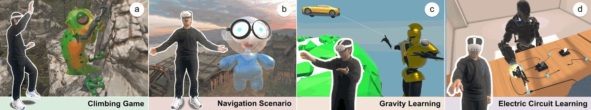
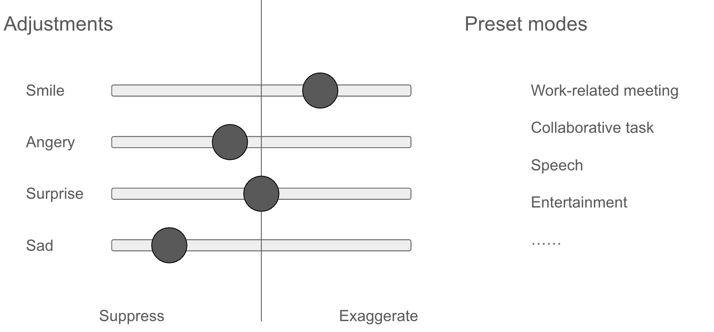
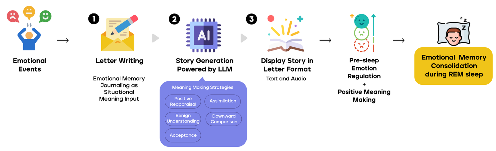

I am an incoming PhD student in Computer Science at Boston University, where I will be advised by Prof. Chang Xiao. My research lies at the intersection of human-computer interaction, extended reality (VR/AR/MR), and AI-human interaction. I build neuroadaptive and mixed-reality systems that extend human capabilities while preserving embodied unity.
I received my B.S. in Data Science from the University of Rochester, where I worked in the BEAR Lab with Prof. Yukang Yan. My work draws on philosophy, phenomenology, and sensing to explore how technology can extend human senses and actions without compromising selfhood.
CHI 2026 →
CHI 2025 →
DIS 2026 →


